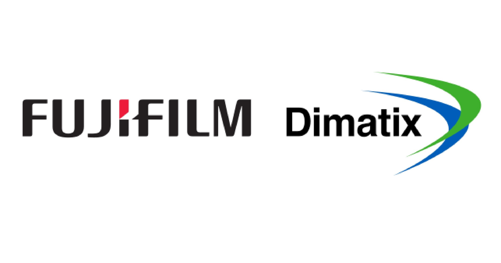

109 Etna Road, Lebanon, New Hampshire 03766

I developed a program to analyze images and generate reports using Python and OpenCV.
The reports that the program produced included heatmaps, step-by-step analysis, and orange peel analysis.
I also created a genetic algorithm to improve the accuracy of the computer vision used in the software.
Additionally, I created a custom GUI was created using tKinter to improve the user interface for the program.